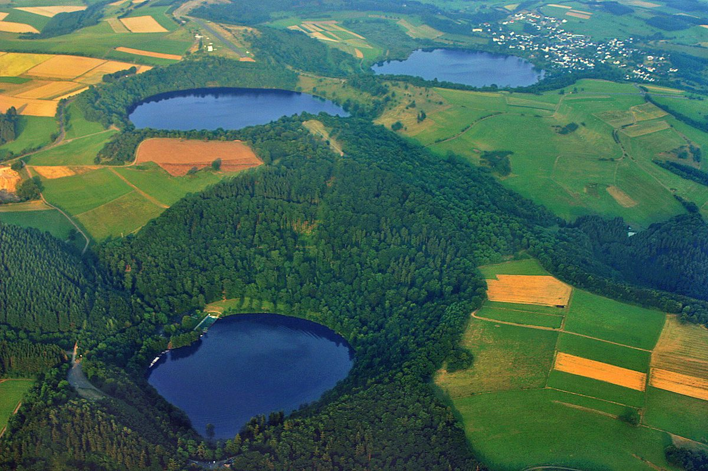

探秘德国艾费尔玛珥湖：大自然的美丽馈赠

位于德国西部的艾费尔地区，以其独特的玛珥湖景观闻名于世。这些湖泊是火山活动的产物，形成了令人叹为观止的自然奇观。对于热爱大自然和户外活动的旅行者来说，艾费尔玛珥湖绝对是一个不可错过的目的地。
如何到达艾费尔玛珥湖
艾费尔地区交通便利，最适合自驾游。从科隆或法兰克福出发，只需约1.5-2小时车程即可到达。如果您更喜欢公共交通，可以乘坐火车到达附近城镇，然后转乘当地巴士。
最佳旅行时间
玛珥湖四季皆美，但春秋两季是游览的最佳时节。春天万物复苏，野花盛开；秋天则层林尽染，景色如画。夏季虽然游客较多，但适合湖畔野餐和游泳。
不容错过的亮点
魏纳玛珥湖：这是艾费尔地区最大、最著名的玛珥湖。湖水清澈见底，四周环绕着茂密的森林，是徒步和骑行的理想场所。
乌尔玛珥湖：以其独特的火山地貌吸引着地质爱好者。湖边设有解说牌，帮助游客了解这一地质奇观的形成过程。
朔纳肯玛珥湖：这里是观鸟爱好者的天堂，湖畔栖息着多种珍稀鸟类。清晨或傍晚时分，更有机会观察到野生动物。
当地美食
艾费尔地区以其优质的农产品闻名。在游览玛珥湖之余，别忘了品尝当地特色美食。推荐尝试艾费尔土豆饼，这是一种用当地土豆制成的传统美食。此外，当地的苹果酒也别具风味，是消暑解渴的佳选。
实用建议
带上舒适的步行鞋，因为大部分景区都适合徒步探索。如果想要游泳，记得携带泳衣和毛巾。为了保护这片美丽的自然遗产，请将垃圾带走，尊重当地环境。
艾费尔玛珥湖不仅是一处风景名胜，更是了解地质历史和亲近大自然的好地方。无论是独自旅行、家庭出游还是与朋友结伴，这里都能带给您难忘的体验。准备出发吧，让艾费尔玛珥湖的自然之美成为您下一段旅行的精彩篇章！
Haiktec
Text mit KI erstellt und automatisch geprueft.